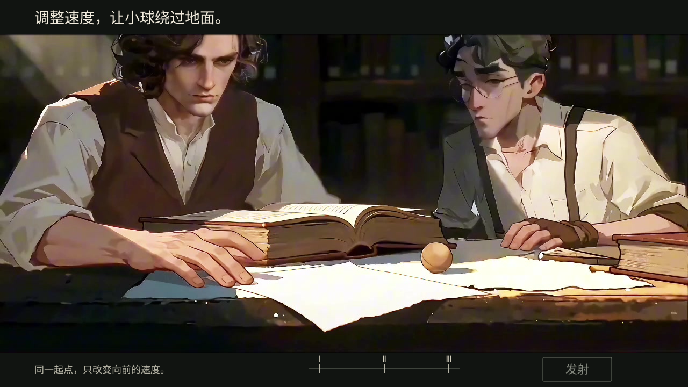
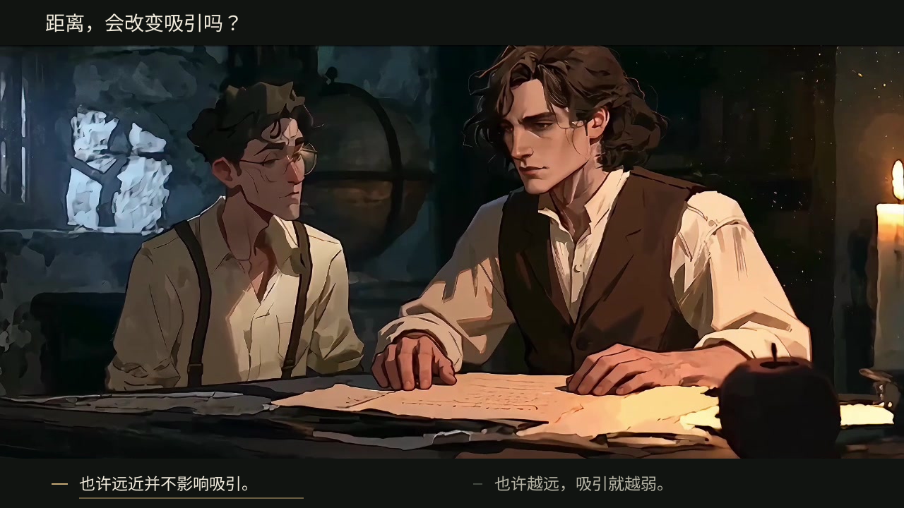
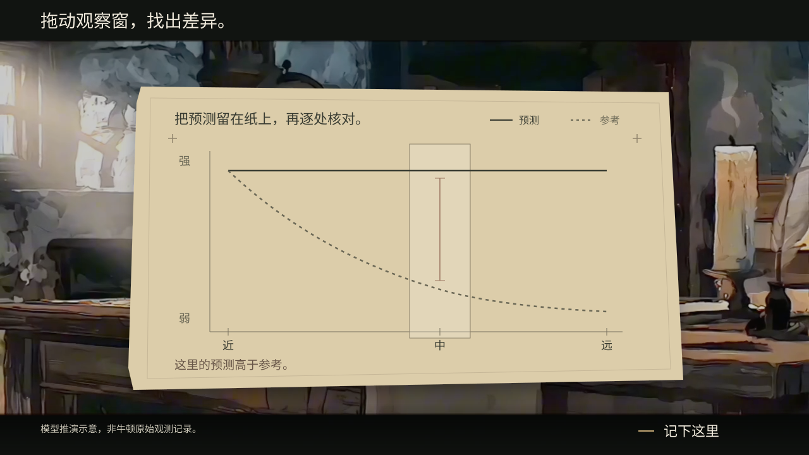
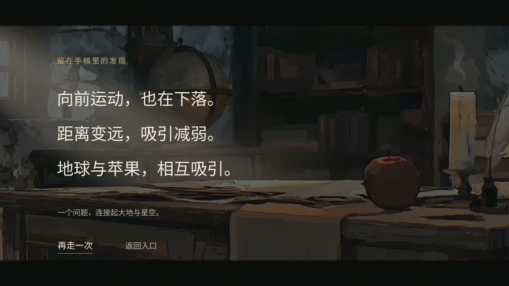

01 / 三档速度：把选择留在画面边缘

初次没有默认档，发射处于不可用状态。细刻度对应更大的透明命中区；拖动只选档，按下发射才进入相应影片。真实预览还需补齐悬停、聚焦、按下和已试档状态。
02 / 对白选择：像接过角色的一句话

第一句展示悬停状态，不表示推荐答案。原静帧字幕仅在结构稿中由黑区覆盖；正式版本须核对原对白是否已经结束，不能遮住尚在说话的内容。两种选择都先进入同一段“留下预测”的回应。
03 / 手稿小游戏：一次只做一件事

画面示意“预测不变”路线检查中点时的偏差。这里只显示当前步骤的主动作；对齐、核对、修正和完成不同时排成一排。纸面是程序绘制的学习载体，曲线数据不随拖纸改变。纸张的透视、边缘和材质仍需Claude在实际画面中细调。
04 / 结尾发现：给故事留下停顿

结尾由人物收束镜头转向同场景桌面，三句发现整行进入，不做三张知识卡。保留再看一次的入口，阅读没有倒计时。